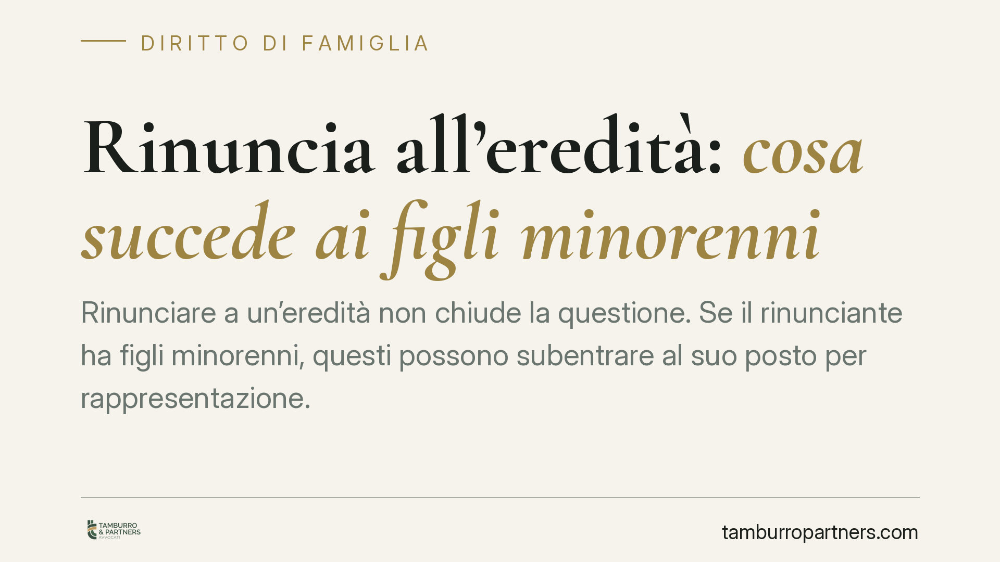

Rinuncia all'eredità: cosa succede ai figli minorenni
Rinunciare a un'eredità non chiude la questione. Se il rinunciante ha figli minorenni, questi possono subentrare al suo posto per rappresentazione. Il meccanismo richiede l'autorizzazione del giudice tutelare e impone scelte ponderate: chi rinuncia per evitare debiti rischia di trasferirli ai propri figli. Ecco le regole applicabili e cosa verificare prima di firmare.

Il fatto: rinunciare non significa fermare la successione
Capita spesso di pensare che, rifiutando un'eredità gravata da debiti, la questione si esaurisca. Non è così. Chi rinuncia esce dalla successione, ma il suo posto può essere preso dai discendenti. E se questi sono minorenni, entra in gioco un secondo passaggio: l'autorizzazione del giudice tutelare.
È un errore diffuso credere che, rinunciando, l'eredità torni indietro verso l'ascendente (per esempio la madre) o verso gli altri chiamati dello stesso grado. Il Codice civile prevede un meccanismo diverso, che va conosciuto prima di compiere qualsiasi atto.
Inquadramento normativo
La rinuncia all'eredità è disciplinata dall'art. 519 del Codice civile: è un atto formale, che si fa con dichiarazione ricevuta da un notaio o dal cancelliere del tribunale competente. Non ammette forme tacite o verbali.
Gli effetti sui discendenti derivano dall'art. 467 c.c., che regola la rappresentazione: quando un chiamato all'eredità non vuole (rinuncia) o non può (per esempio è premorto) accettare, i suoi discendenti subentrano nel suo luogo e nel suo grado. In pratica, i figli del rinunciante ereditano "al posto" del genitore, ricevendo la quota che sarebbe spettata a quest'ultimo.
Quando i discendenti sono minorenni, l'accettazione o la rinuncia per loro conto non è libera. Il genitore che esercita la responsabilità genitoriale deve chiedere l'autorizzazione al giudice tutelare. Senza questa autorizzazione, l'atto non è valido. Il giudice valuta se la scelta corrisponde all'interesse del minore.
Merita attenzione un punto spesso trascurato: le somme derivanti da un'assicurazione sulla vita non entrano nell'asse ereditario. L'art. 1920 c.c. stabilisce che il beneficiario acquista un diritto proprio, per effetto della designazione, verso l'assicuratore. Le polizze vita, quindi, restano fuori dai calcoli sull'eredità e non sono toccate dalla rinuncia.
Cosa cambia per chi rinuncia
La conseguenza pratica è netta. Se un genitore rinuncia a un'eredità piena di debiti, non elimina il problema: lo sposta sui figli, che diventano i nuovi chiamati per rappresentazione.
A quel punto le strade sono due. Rinunciare anche in nome dei minori, previa autorizzazione del giudice tutelare, per chiudere davvero la porta. Oppure accettare con beneficio d'inventario, strumento pensato proprio per i minori, che limita la responsabilità del minore ai soli beni ereditati, senza intaccarne il patrimonio personale.
È una decisione che richiede una fotografia precisa dell'eredità: attivo e passivo, beni immobili, conti, debiti, eventuali garanzie prestate dal defunto. Solo così si capisce se convenga accettare, accettare con beneficio d'inventario o rinunciare per tutti.
Quanto alle polizze vita, chi è indicato come beneficiario può incassarle a prescindere dalla scelta sull'eredità. Il diritto sulla somma assicurata è autonomo: non si perde rinunciando e non si acquista accettando.
Cosa fare in concreto
- Chiedete l'elenco completo di attivo e passivo prima di decidere: senza un quadro chiaro del patrimonio del defunto, ogni scelta è al buio.
- Verificate la posizione dei vostri figli: se rinunciate, i minori subentrano per rappresentazione e la questione si ripropone su di loro.
- Presentate istanza al giudice tutelare ogni volta che l'atto (rinuncia o accettazione beneficiata) riguarda un minore: senza autorizzazione l'atto è privo di effetti.
- Valutate l'accettazione con beneficio d'inventario come alternativa alla rinuncia: protegge il patrimonio del minore limitando la responsabilità ai beni ereditati.
- Tenete separate le polizze vita: se siete beneficiari, quelle somme non rientrano nell'eredità e non dipendono dalla vostra scelta.
La rinuncia è un atto definitivo e produce effetti a catena. Prima di firmare conviene ricostruire l'intera situazione successoria, perché ciò che sembra una via d'uscita può trasformarsi in un onere per la generazione successiva.
Disclaimer
Contributo informativo a cura di Tamburro & Partners - Avv. Giuseppe Tamburro. Non costituisce parere legale.
Ogni famiglia ha il suo equilibrio.
Separazione, divorzio, affidamento, assegno: se vuoi un confronto riservato su una specifica situazione, scrivi allo studio. Ti rispondiamo entro un giorno lavorativo.